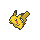

Layout
text-align
text-align은 글자 및 개체들을 정렬해주는 속성이다.
text-align에는 다음과 같은 값이 있다.
xxxxxxxxxxtext-align: 값;/*left : 왼쪽 정렬, right : 오른쪽 정렬, center : 가운데 정렬, justify : 양쪽 정렬*/이제 글자를 가운데로 보내고 싶으면 text-align을 쓰면 된다.
xxxxxxxxxx<style> div{ border: 3px solid red; } #left{ text-align: left; } #right{ text-align: right; } #center{ text-align: center; }</style><body> <div id="left">CSS(Cascading Stylesheets – 종속형 스타일시트)는<br>HTML을 익힌 후 가장 먼저 배워야할 웹기술입니다.<br>HTML이 콘텐츠의 구조와 의미를 정의하는 반면<br>CSS는 스타일과 레이아웃을 지정합니다.<br>예를 들어, CSS를 사용하면 콘텐츠의 글꼴, 색상, 크기 및 간격을 변경하거나,<br>여러 개의 열로 분할하거나,<br>애니메이션이나 기타 장식 효과를 추가할 수 있습니다.</div> <div id="right">CSS(Cascading Stylesheets – 종속형 스타일시트)는<br>HTML을 익힌 후 가장 먼저 배워야할 웹기술입니다.<br>HTML이 콘텐츠의 구조와 의미를 정의하는 반면<br>CSS는 스타일과 레이아웃을 지정합니다.<br>예를 들어, CSS를 사용하면 콘텐츠의 글꼴, 색상, 크기 및 간격을 변경하거나,<br>여러 개의 열로 분할하거나,<br>애니메이션이나 기타 장식 효과를 추가할 수 있습니다.</div> <div id="center">CSS(Cascading Stylesheets – 종속형 스타일시트)는<br>HTML을 익힌 후 가장 먼저 배워야할 웹기술입니다.<br>HTML이 콘텐츠의 구조와 의미를 정의하는 반면<br>CSS는 스타일과 레이아웃을 지정합니다.<br>예를 들어, CSS를 사용하면 콘텐츠의 글꼴, 색상, 크기 및 간격을 변경하거나,<br>여러 개의 열로 분할하거나,<br>애니메이션이나 기타 장식 효과를 추가할 수 있습니다.</div></body>CSS(Cascading Stylesheets – 종속형 스타일시트)는
HTML을 익힌 후 가장 먼저 배워야할 웹기술입니다.
HTML이 콘텐츠의 구조와 의미를 정의하는 반면
CSS는 스타일과 레이아웃을 지정합니다.
예를 들어, CSS를 사용하면 콘텐츠의 글꼴, 색상, 크기 및 간격을 변경하거나,
여러 개의 열로 분할하거나,
애니메이션이나 기타 장식 효과를 추가할 수 있습니다.
HTML을 익힌 후 가장 먼저 배워야할 웹기술입니다.
HTML이 콘텐츠의 구조와 의미를 정의하는 반면
CSS는 스타일과 레이아웃을 지정합니다.
예를 들어, CSS를 사용하면 콘텐츠의 글꼴, 색상, 크기 및 간격을 변경하거나,
여러 개의 열로 분할하거나,
애니메이션이나 기타 장식 효과를 추가할 수 있습니다.
CSS(Cascading Stylesheets – 종속형 스타일시트)는
HTML을 익힌 후 가장 먼저 배워야할 웹기술입니다.
HTML이 콘텐츠의 구조와 의미를 정의하는 반면
CSS는 스타일과 레이아웃을 지정합니다.
예를 들어, CSS를 사용하면 콘텐츠의 글꼴, 색상, 크기 및 간격을 변경하거나,
여러 개의 열로 분할하거나,
애니메이션이나 기타 장식 효과를 추가할 수 있습니다.
HTML을 익힌 후 가장 먼저 배워야할 웹기술입니다.
HTML이 콘텐츠의 구조와 의미를 정의하는 반면
CSS는 스타일과 레이아웃을 지정합니다.
예를 들어, CSS를 사용하면 콘텐츠의 글꼴, 색상, 크기 및 간격을 변경하거나,
여러 개의 열로 분할하거나,
애니메이션이나 기타 장식 효과를 추가할 수 있습니다.
CSS(Cascading Stylesheets – 종속형 스타일시트)는
HTML을 익힌 후 가장 먼저 배워야할 웹기술입니다.
HTML이 콘텐츠의 구조와 의미를 정의하는 반면
CSS는 스타일과 레이아웃을 지정합니다.
예를 들어, CSS를 사용하면 콘텐츠의 글꼴, 색상, 크기 및 간격을 변경하거나,
여러 개의 열로 분할하거나,
애니메이션이나 기타 장식 효과를 추가할 수 있습니다.
HTML을 익힌 후 가장 먼저 배워야할 웹기술입니다.
HTML이 콘텐츠의 구조와 의미를 정의하는 반면
CSS는 스타일과 레이아웃을 지정합니다.
예를 들어, CSS를 사용하면 콘텐츠의 글꼴, 색상, 크기 및 간격을 변경하거나,
여러 개의 열로 분할하거나,
애니메이션이나 기타 장식 효과를 추가할 수 있습니다.
vertical-align
vertical-align은 display속성이 inline인 경우 혹은 table-cell (<td>)인 경우에만 쓰인다.
xxxxxxxxxxvertical-align: baseline;/*top : 위쪽 정렬, bottom : 아래쪽 정렬, middle : 가운데 정렬, baseline : 같은 행의 다른 값들과 맞춤*/xxxxxxxxxx<style> #top{ vertical-align: top; } #bottom{ vertical-align: bottom; } #middle{ vertical-align: middle; } #baseline{ vertical-align: baseline; }</style><body> <div> <img id="top" width="100" src="html5.svg"> top 정렬입니다. </div> <div> <img id="bottom" width="100" src="html5.svg"> bottom 정렬입니다. </div> <div> <img id="middle" width="100" src="html5.svg"> middle 정렬입니다. </div> <div> <img id="baseline" width="100" src="html5.svg"> baseline 정렬입니다. </div></body> top 정렬입니다.
bottom 정렬입니다.
middle 정렬입니다.
baseline 정렬입니다.
특이한 점이라면 정렬을 할 때 부모 태그에 써주는 것이 아니라, 이미지 자체에 써준다는 점이다.
테이블 또한 비슷하게 작성하면 된다.
float
float는 개체를 떠다니게 해주는 속성이다.
float는 left 혹은 right 값만 존재한다.
또한 clear 속성은 float의 영향을 받지 않도록 하는 속성이고 마찬가지로 left 혹은 right 값 그리고 both만 존재한다.
xxxxxxxxxx<style> img{ width:100px; } .left{ float: left; } .right{ float: right; } .bord{ width: 400px; border: 1px solid blue; clear: both; background-color: gainsboro; } span{ border: 1px solid red; display: inline-block; } .cen{ text-align: center; }</style><body> <div class="bord"> <span class="left"><img src="피카츄.png"><div class="cen">float: left</div></span><div>1번 문장</div><div>2번 문장</div> <div>3번 문장</div> <span><img src="피카츄.png"><div class="cen">normal</div></span> </div> <div class="bord"> <span><img src="피카츄.png"><div class="cen">normal</div></span><div>1번 문장</div><div>2번 문장</div><div>3번 문장</div> <span><img src="피카츄.png"><div class="cen">normal</div></span> </div> <div class="bord" style="height:fit-content;"> <h1>overflow: normal</h1> <span class="left"><img src="피카츄.png"><div class="cen">float: left</div></span> <span class="left"><img src="피카츄.png"><div class="cen">float: left</div></span> <div>1번 문장</div><div>2번 문장</div><div>3번 문장</div> </div> <div class="bord" style="overflow: hidden;height:fit-content;"> <h1>overflow: hidden</h1> <span class="left"><img src="피카츄.png"><div class="cen">float: left</div></span> <span class="left"><img src="피카츄.png"><div class="cen">float: left</div></span> <div>1번 문장</div><div>2번 문장</div><div>3번 문장</div> </div> <div class="bord" style="overflow: hidden;height:fit-content;"> <h1>overflow: hidden</h1> <span class="left"><img src="피카츄.png"><div class="cen">float: left</div></span> <span class="right"><img src="피카츄.png"><div class="cen">float: right</div></span> <div></div><div>1번 문장</div><div>2번 문장</div><div>3번 문장</div> </div></body>
float: left
1번 문장
2번 문장
3번 문장
normal
normal
1번 문장
2번 문장
3번 문장
normal
overflow: normal
float: left
float: left
1번 문장
2번 문장
3번 문장
여기서 꼭 기억해야할 것!!!
- float와 clear는 항상 같이 다닌다는 것.
- clear 에는 left, right 뿐만 아니라 both 속성도 존재한다는 것.
xxxxxxxxxxfloat: left;/*left, right*/clear: both;/*both, left, right*/position
position 속성은 개체를 이동시키는 것에 대한 방법을 제공하는 속성이다.
position 에는 총 5가지 속성이 있다.
xxxxxxxxxxposition: static;/*static : 기본값absolute : 페이지에서 절대값으로 배치relative : 원래위치에서 배치fixed : 브라우저 창에 배치sticky : 스크롤 창에 배치*/xxxxxxxxxx<style> .img1{ max-width:100px; vertical-align: middle; } .bord{ width: 400px; height: 400px; border: 1px solid blue; clear: both; overflow: auto; background-color: gainsboro; } .cen{ text-align: center; } .bor{ border: 1px solid red; } .span2{ cursor: pointer; position:sticky; border: 1px solid red; } #fix{ top:0; } #sta{ top:25px; } #rel{ top:50px; } #sti{ top:75px; } #fix:hover ~ #pica{ position: fixed; left: 40px; top: 40px; } #sta:hover ~ #pica{ position: static; } #rel:hover ~ #pica{ position: relative; left: 40px; top: 40px; } #sti:hover ~ #pica{ position: sticky; left: 40px; top: 40px; } .table1{ border: 3px solid gold; border-collapse: collapse; } .th1{ color: white; background-color: gold; } .th1, .td1{ border: 1px solid #ddd; text-align: center; min-width: 150px; max-width: 250px; font-size: 14px; padding:5px; } .td1{ height: 80px; }</style><body> <div class="bord" style="width:fit-content;background-color: white;"> <h1>left: 40px, top: 40px 을 주었을 때</h1> <span class="span2" id="fix">position: fixed</span><br> <span class="span2" id="sta">position: static</span><br> <span class="span2" id="rel">position: relative</span><br> <span class="span2" id="sti">position: sticky</span><br> <img class="img1" src="피카츄.png"> <img class="bor img1" id="pica" src="피카츄.png"> <img class="img1" src="피카츄.png"> <table class="table1"> <tr> <th class="th1" colspan="3">기본 정보</th> </tr> <tr> <th class="th1" colspan="3">이름</th> </tr> <tr> <th class="th1">한국어</th> <th class="th1">일본어</th> <th class="th1">영어</th> </tr> <tr> <td class="td1"><img class="img1" src="피카츄1.png"> 피카츄</td> <td class="td1">ピカチュウ</td> <td class="td1">Pikachu</td> </tr> <tr> <td class="td1" colspan="3">홍콩을 제외할 경우 <strong>세계 공통 명칭</strong></td> </tr> <tr> <th class="th1">도감 번호</th> <th class="th1">성비</th> <th class="th1">타입</th> </tr> <tr> <td class="td1">전국: 025<br> 성도: 022<br> 호연: 156RSE / 163ORAS<br> 신오: 104<br> 센트럴칼로스: 036<br> 알로라: 025SM / 032USUM<br> 가라르: 194본토 / 085갑옷섬</td> <td class="td1">수컷: 50%<br>암컷: 50%</td> <td class="td1">전기</td> </tr> </table> </div></body>left: 40px, top: 40px 을 주었을 때
position: fixedposition: static
position: relative
position: sticky
| 기본 정보 | ||
|---|---|---|
| 이름 | ||
| 한국어 | 일본어 | 영어 |
 피카츄 | ピカチュウ | Pikachu |
| 홍콩을 제외할 경우 세계 공통 명칭 | ||
| 도감 번호 | 성비 | 타입 |
| 전국: 025 성도: 022 호연: 156RSE / 163ORAS 신오: 104 센트럴칼로스: 036 알로라: 025SM / 032USUM 가라르: 194본토 / 085갑옷섬 | 수컷: 50% 암컷: 50% | 전기 |
postion을 적재적소에 잘 활용하는 것이 매우 중요하다.